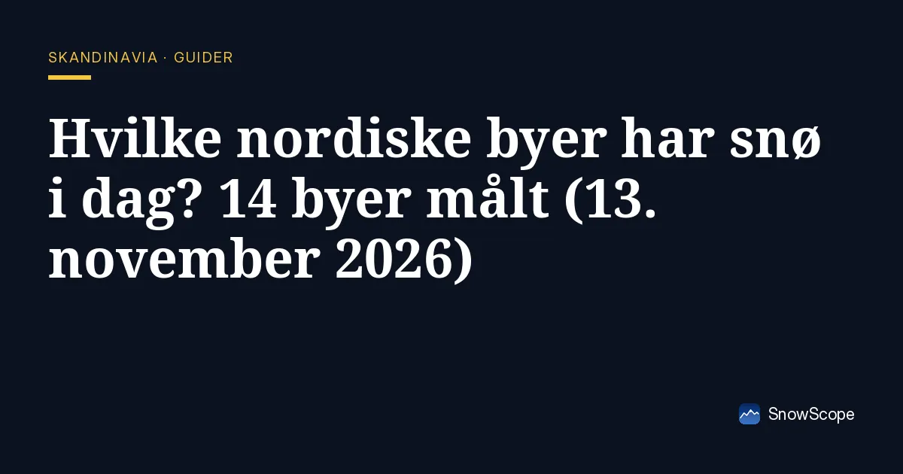

Hvilke nordiske byer har snø i dag? 14 byer målt (13. november 2026)
Fredag morgen løp det nordiske snøskillet nord-sør i stedet for øst-vest, med Bottenhavskysten og det indre Sverige langt hvitere enn Polarsirkelen. Måling av 14 store byer fra Bergen til Tromsø viser et vinterландskап i overgang: noen steder begravet, andre fremdeles grønne, og ett sted langt nord med overraskende ingen snø i det hele tatt.
Se snøprognosen for Scandinavia direkte i SnowScope-appenSnødybde, puddervarsler og 3D-kartet, gratis.
Den hvite sonen: høyder over Oslo leder; Umeå og Östersund følger etter
Oslo sitt høydefortrinn er slående. Bysentrum ved Blindern ligger med bare 4 cm, dybden målt ved værstasjonen. Men 8 km nord, oppe ved Tryvannshøgda på 528 m, når snøen 37 cm. Dette er den dypeste målingen i noen av de 14 byene. Mønsteret er klart: få høyde, få snø.
På kystsletten topper Umeå listen med 20 cm ved Röbäcksdalen på bykanten. Nesten alt kom på to dager; bakken var bar onsdag. Östersunds målinger varierer med stedet: 19 cm ved Norderön og 24 cm ved Marby, begge steder ved sjøen som fulgte samme storm som rammet Umeå. Ingen av byene hadde målbar snø for fire dager siden.

Tromsø og de høye fjellene i nord
Tromsøs bystasjonen på øya måler 6 cm, men kjør 45 km sør inn i fjellene og Lyngen Gjerdvassbu på 710 m har 44 cm. Dette viser splittelsen mellom Arktisk kyst og indre topper. Selv byen er tynn; de innlandske dalene holder sesongenes opphopning.
Kystbyene i det fjerne Nord-Norge – Bardufoss, Nordstraum – har 3 til 8 cm. Dette er et område der de fleste vintrer har snø innen midten av november, men i år er dekket lappet. Luleå lufthavn sendte ingen måling, men de fem nærmeste stasjonene 35 til 60 km borte viser 3 til 7 cm, alt nytt siden torsdag.
Trondheim: en by fanget mellom kyst og dal
Trondheims bystasjoner rapporterer ingen snødybde i det hele tatt. Fjordkantbakken er fremdeles bar. Men beveg deg innland og oppover, og snøen dukker opp: 5 cm ved Meråker 67 km øst, og 18 cm ved Tågdalen 78 km sørvest på 415 m høyde. Byen ligger i det tørreste området i regionen, beskyttet fra stormene som har drenket fjellene.
Fredag kveld kan Trondheim selv fremdeles være uten snødekning, selv som de høye rutene og indlandsskoger er hvite. Dette er typisk for midten av november på Trøndelags kyst.
Kirunas forsvinningstrick og Arktis overraskelse
Kiruna bryter alle forventninger. Bystasjonen på 519 m måler 0 cm, og det gjør Jukkasjärvi og Esrange også. Dette er ekstraordinært. SnowScopes historie viser at Kiruna har hatt snø på denne datoen i alle 46 tidligere vintrer på rekord, med en median på 23 cm. I fjor på denne tiden hadde den 24 cm. I år: ingenting.
Det bredere mønsteret nord for Polarsirkelen viser samme sjokk. Av 22 svenske stasjoner nord for breddegrad 66°N, måler bare 5 noen snø i det hele tatt, og den dypeste er bare 9 cm. Den kalde Arktiske luften har ankommet uten fuktigheten til å bygge dekke.
Grønne byer: sør holder sin stilling
Stockholm, Göteborg, Helsinki, Tampere og Bergen er alle barmarkerte. Ingen snø ved de sentrale stasjonene i noen av disse hovedstedene, som er normalt for midten av november. Den nærmeste hvite flekken til Stockholm ligger 75 km nord. Gunntorp, innland fra Göteborg, har 12 cm – den dypeste snøen sør for 60. breddegrad – men kysten selv forblir grønn.
Bergen ved sjøen på vestkysten er tørt uten snø. Høydene over Bergen – Kvamskogen og Mjølfjell – holder 5 til 10 cm, men byen selv er en uke eller mer unna sitt første varige dekke.
Helgeutsikten: snø for høydene, regn for kysterna
Nord får et lite påfyll. Tromsø og Kiruna er prognostisert å få rundt 2 cm. Rovaniemi, lengre sør men innland, kan se omkring 5 cm. Umeå og Östersund forblir tørt og kaldt.
Sør blir mildere og våtere. Bergen venter kraftig regn lørdag og søndag, omkring 40 mm, som vil fjerne alt tynt tidligdekke i de lave dalene. Kulden som låste inn Mid-Sverige snøen begynner å gi seg. Snøgrensen holder seg omtrent der den er nå: over midten av Skandinavia, med den Arktiske kysten kald men bar og de sydlige hovedstedene fremdeles venter på at november skal føles som vinter.
Tips til skiløpere
- For å finne hvit bakke i en nordisk by denne helgen, gå nord: Umeå, Östersund og Rovaniemi er dine sikkerste veddemål. Tromsø og Kiruna får noen få centimeter men forblir tynn.
- I Oslo, ikke gå gjennom bysentrum på jakt etter snø. Ta t-banen nord til Nordmarka; snøen bor i høydene, ikke gatene.
- Kiruna-besøkende: byen er bar i dag. Hvis du trenger snø, kjør innland mot den norske grensen og fjelldalene, hvor 44 cm ligger ved Lyngen Gjerdvassbu.
- I sør – Stockholm, Göteborg, Helsinki, Bergen – godta at snø er fremdeles uker unna. Dette er normalt midt i november. Tidlig sesongdekke er tynt og rutt; stein ligger tett under.
- Følg med på utsikten for helgen. Bergen får regn; Arktis blir kaldt. Snøskillet hardner i stedet for å falme.
Om tallene
Snødybdene for skistedene er det dypeste snødekket i de øvre bakkene på datoen som vises; de er anslag for et område, ikke en måling i ett punkt. Prognoser kan endre seg. Les alltid det offisielle snøskredvarselet før du kjører utenfor preparert løype.
Siter denne rapporten
For forskning, undervisning eller presse: tallene og diagrammene kan brukes fritt under CC BY 4.0 med denne kildehenvisningen.
SnowScope (2026), Hvilke nordiske byer har snø i dag? 14 byer målt (13. november 2026), https://snowscope.app/blog/nb/2026/11/nordic-cities-snow-today-13-november-2026.html, hentet 2026-11-13
SnowScope (Atlas Labs). (2026, November 13). Hvilke nordiske byer har snø i dag? 14 byer målt (13. november 2026). SnowScope snow reports. https://snowscope.app/blog/nb/2026/11/nordic-cities-snow-today-13-november-2026.html
BibTeX
@misc{snowscope2026nordiccitiessnowtoday13n,
author = {{SnowScope (Atlas Labs)}},
title = {Hvilke nordiske byer har snø i dag? 14 byer målt (13. november 2026)},
year = {2026},
month = nov,
howpublished = {\url{https://snowscope.app/blog/nb/2026/11/nordic-cities-snow-today-13-november-2026.html}},
note = {Published 2026-11-13 18:09 UTC; accessed 2026-11-13}
}· CC BY 4.0 · Metoder, data og verktøy →
Følg Scandinavia
Gratis: en melding når nysnø er på vei, og prognosen hver morgen.